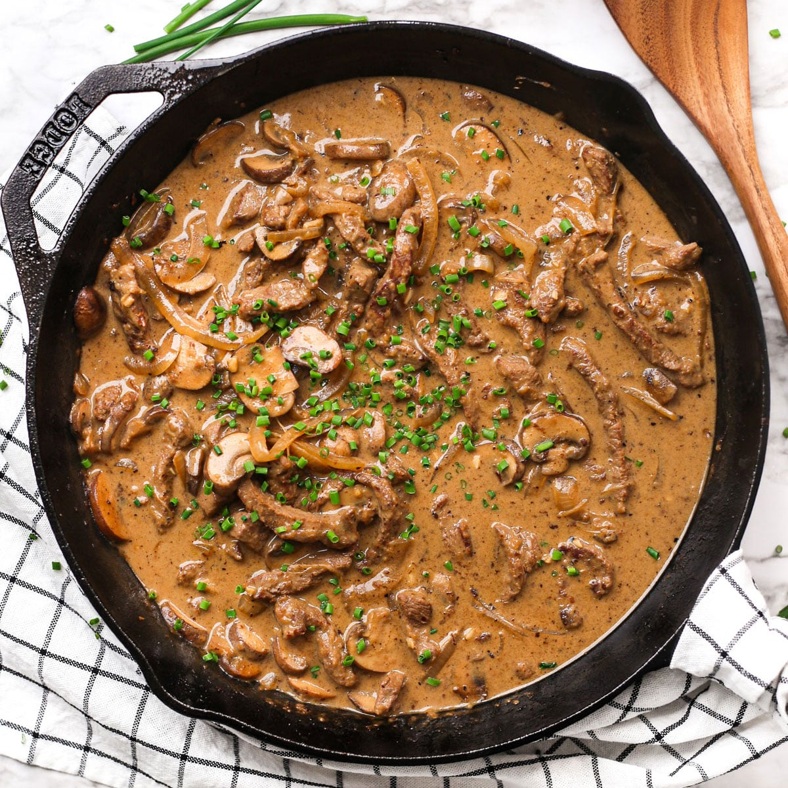

Elegant Beef Stroganoff

Beef Stroganoff
This recipe is easy to make and makes an elegant-looking meal that anyone would be proud to offer to guests.
This is one of the favorite dinners for my family.It can be easily increased to serve more people with
a little increase in prep time.
Ingredients
- 2 pounds sirloin steak, pounded to 1/4-inch thickness and cut into 1 x 1 1/2-inch strips
- ½ cup red wine
- ¼ cup all-purpose flour
- 1 teaspoon salt
- 1 teaspoon paprika
- ½ teaspoon ground black pepper
- ¼ cup butter
- 1 small onion, diced
- 3 cloves garlic, minced
- 2 cups canned sliced mushrooms
- 1 (10 ounce) can beef broth
- ½ cup water
- 1 tablespoon Worcestershire sauce
- 2 teaspoons red pepper flakes
- 1 teaspoon prepared yellow mustard
- ⅓ cup cream cheese
- ⅓ cup sour cream
- 2 cups hot cooked noodles
Steps
- Mix steak and red wine together in a bowl; set aside to marinate for 15 to 30 minutes.
- Combine flour, salt, paprika, and black pepper together in a resealable plastic bag. Remove steak from marinade, reserving red wine for later use; add steak to flour mixture and shake to coat.
- Melt butter in a large skillet over medium-high heat; cook and stir steak, onion, and garlic until steak is browned and onion is softened and translucent, 10 to 15 minutes.
- Stir mushrooms, beef broth, water, reserved red wine marinade, Worcestershire sauce, red pepper flakes, and mustard into steak mixture until well mixed; bring to a boil. Reduce heat, cover skillet, and simmer until steak is very tender, about 1 hour.
- Stir cream cheese and sour cream into steak mixture; cook and stir until warmed, 2 to 3 minutes. Serve over cooked noodles.